Sometimes you need to measure angles, but you don't have a protractor at hand.
But, if you are reading this - you definitely have a desktop, laptop or mobile device with a web browser.
So, why not to use its display to measure something?
You don't have to install the app on a smart-phone, this online tool just works in the browser.
It is possible to measure right, acute and obtuse angles in degrees from 0° to 360°
using this interactive instrument.
You may use it for free for home, development, education or other purposes.
We made it for You!
Virtual tool is useful occasionally, mostly for fun. In a real life, in professional work people use real instruments.
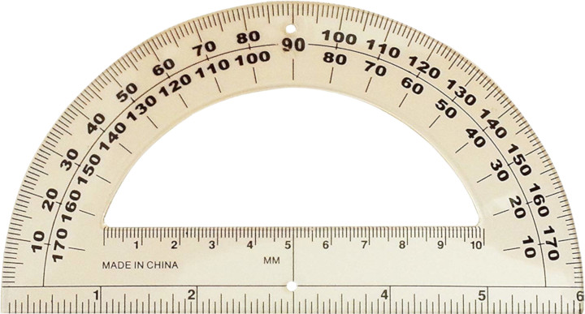
Everybody had this piece of transparent plastic for measuring angles in a school.
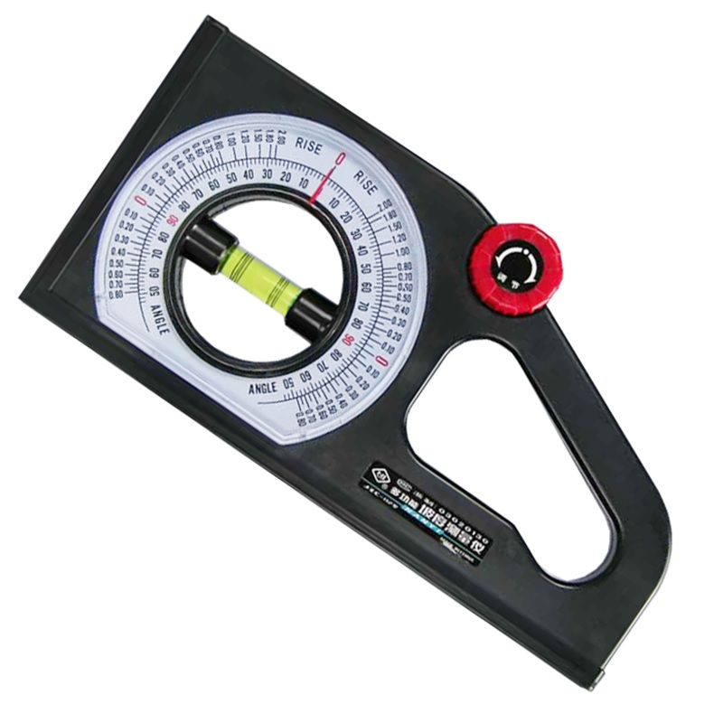
The core of this tool is liquid with a bubble in a glass vial. You just need to centre the bubble between the divisions on the vial. Arrow connected with the vial will indicate the measured angle. It is easy to use with accuracy to within plus or minus 1 degree.
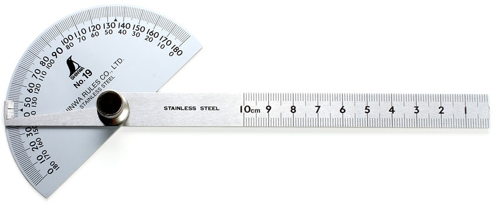
Steel protractor is useful for setting bevels, transferring angles, architectural design or engineering drawing. It consists of a body with graduations from 0 to 180 degrees and a blade that can be locked at any angle.
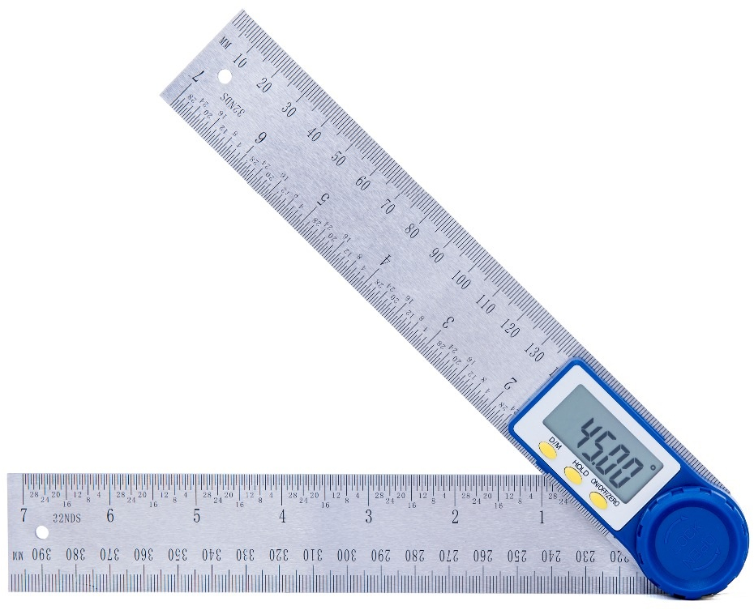
It has two stainless steel rulers and a digital angle sensor with LCD display runs on a battery. You can easily and accurately measure angles and lengths.
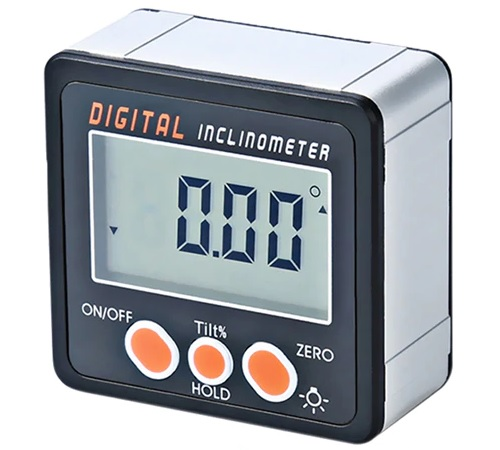
Typically it is a portable battery powered device with a display and inclinometer sensors. Professional digital inclinometers guarantee excellent precision in measuring angles. Marketplaces offer different devices that provide high accuracy angle measurement at a reasonable cost.
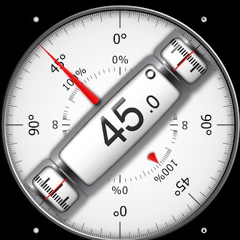
There are some amazing smartphone applications to measure angles. Nowadays smartphones can identify their orientation using an accelerator, an integrated micro device with axis-based motion sensing. This information can be used by the apps to determine the angle at which a device is tilted with respect to the Earth, or calculate the angle between two positions of the mobile device. Another approach to measure angles via smartphone is based on image and photo analysis. You can just take a picture with camera or from gallery, and then measure angles and lengths.
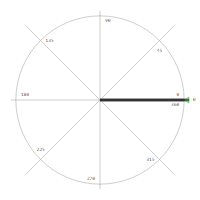
An angle equal to 0°
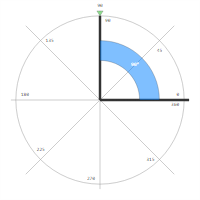
An angle equal to 90° (it is formed by two perpendicular lines)
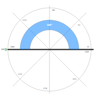
An angle equal to 180° (it is just a line)
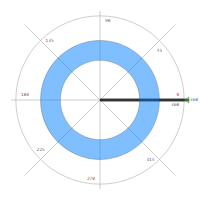
An angle equal to 360° (or full turn)
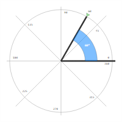
An angle between 0° and 90° (larger than the Zero, but smaller than the Right angle)
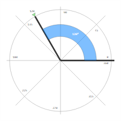
An angle between 90° and 180° (larger than the Right, but smaller than the Straight angle)
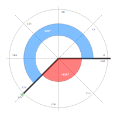
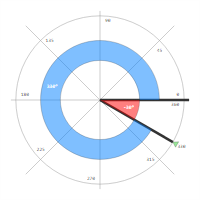
An angle between 180° and 360° (larger than the Straight, but smaller than the Full angle)
Sometimes it is simpler to work with a negative angle instead of the Reflex angle
(see the angle in red).
For example, an orientation represented as 225° is equivalent to -135° (360° - 225°).
Or, an orientation represented as 330° is equivalent to -30° (360° - 330°).
Full turn can be divided into pieces of the same size. The sizes of some pieces have their special names.
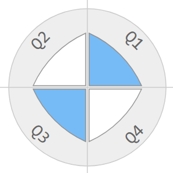
Quadrant is 1/4 of a turn, or 90°.
Full turn contains 4 quadrants.
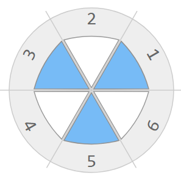
Sextant is 1/6 of a turn, or 60°.
Full turn contains 6 sextants.
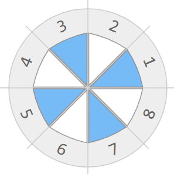
Octant is 1/8 of a turn, or 45°.
Full turn contains 8 octant.
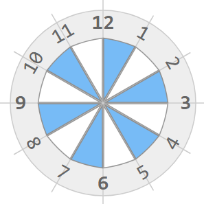
Clock position is 1/12 of a turn, or 30°.
Full turn contains 12 positions.
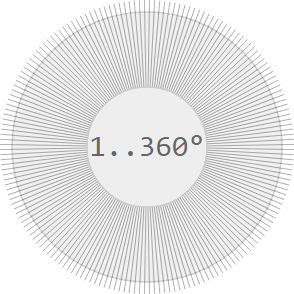
Degree is 1/360 of a turn, or 1°.
Full turn contains 360 degrees.
© 2019 Xantorohara